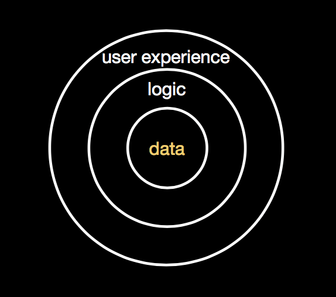

Hi Folks,
It's Robb Beal, a data-driven Product Leader.
Below you'll find examples of my experiences and interests around Data, Stats, and Machine Intelligence, especially in the service of better digital experiences.
Earlier in my career I led UX for LucidEra. Its primary web application (now part of the Pentaho suite) would remind you of Tableau with its pervasive drag and drop UI for dimensions and measures to produce pivot tables or multi-dimensional visualizations.
In order to design this app well, I dove deeply into the multi-dimensional analytics domain, especially filtering (e.g. Top N) and summary metrics (e.g. % of, Rank, Running Sum).
At Booksource (EdTech), my team and I established the Product Analytics foundations for the online store and a 70K monthly active user classroom library organizer web app from whole cloth. We bootstrapped Google Tag Manager, used it to create key business value-generating events/goals and (in Google Analytics) created important goal- and page-based flow/funnel reports (e.g., for the Account Sign-up and Store Checkout flows). We then began investigating those events/goals and flows for UX improvement opportunities, eventually training my team on how to interpret the reports and scout for opportunities themselves.
Additionally, we worked with our engineering team to re-organize Google Analytics to allow effortless reporting for cross-subdomain user journeys. For example, classroom library app users checkout/purchase recommended books from the store that runs on another subdomain.
Finally, I wrote requirements for things like: a) adding the user persona (Teacher, Principal, Purchasing Professional) to every store request in order to better understand which persona uses which portions of the store and b) for creating custom measures of on-site search failures (e.g. identifying the percentage of searches in which none of the results are clicked through).
Note: We additionally established the SEO foundations using Google Search Console, Moz, and other tools and integrated Search data into Google Analytics.
At Graybar (Fortune 500 B2C/B2B E-Commerce) for its online store, we used Google Analytics to inform much of our design work. This was more conventional analytics where for redesigns of Product, SKU, and Checkout pages, we analyzed metrics like sessions, pageviews and users and used flow viz reports to see where users came from and went for any given page. We also did in-depth analysis of new vs existing users and for new users, what channels they came from. The motivation for this is that the experience for someone visiting the 1st time needs to be very different than the person returning for the 10th+ time.
At Graybar for its online store, my team and I used Dynatrace on a weekly basis, especially its Real User Monitoring functionality. We used Dynatrace for such things as:
At Booksource, using voyant-tools.org, I envisioned and led my team in a project whose goal was to analyze whether we were using the same words (and with similar frequency) in our store product page titles, descriptions, etc that users were entering in our on-site search. The analysis led to several recommendations for emphasizing certain words our users were entering that we weren't including on product pages and for discontinuing the use of certain words that we used but users didn't.
Very early in my career, I was a significant contributor to an Alation-like Data Catalog app for the US EPA. Back then Metadata Registry was the term used to describe it and ISO/IEC 11179 was the standard underpinning the app.